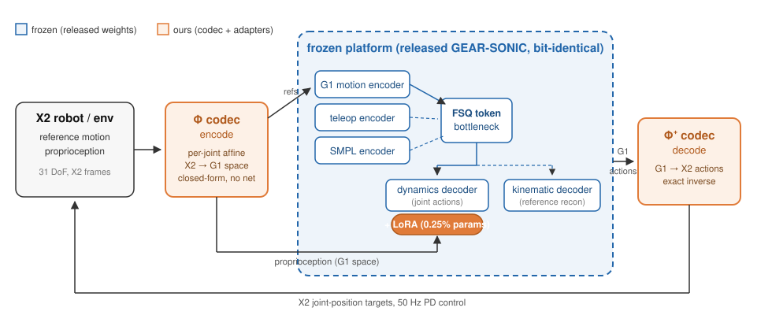

Cross-Embodiment Transfer of a Frozen Humanoid Whole-Body Controller via Analytic Codec and LoRA Adapters
A frozen, publicly released whole-body controller (GEAR-SONIC, trained on the Unitree G1) drives the AgiBot X2 Ultra — every encoder, the token bottleneck, and the motion prior untouched. A closed-form joint-space codec plus LoRA adapters on one decoder (0.25% of the platform's parameters), trained overnight on one 8-GPU node — about 2% of the platform's cited training compute.
The result is not parity but reversal: on out-of-distribution content the transfer beats the tracker natively trained for the X2 (69.0% vs 59.0% success) — while in-distribution benchmarks cannot tell the two apart. The same recipe, codec removed, specializes the platform on its own body with zero forgetting.
New in v0.2 (2026-09-12): the reversal survives hardware — an 18-minute untethered rough-terrain walk (grass, ramp, curb, pebbles; no e-stop, tilt p99 9.0°, three ≥20° excursions each recovered within 0.8 s) where the native line showed close-call imbalance on the same ground minutes later, running hotter. Plus: the platform's human-pose (SMPL) input path recovered to incumbent parity with a 0.3 sampling share, and the embodiment floor's actuator share anatomized — including a reward-margin pathology in which a 0.8 margin silently re-imposed a 19.2 N·m "hardware" ceiling.
How it works

Relaxed walk — incumbent vs zero-shot vs adapted
Gangam dance — incumbent vs zero-shot vs adapted
When it does not transfer: an anomaly at millisecond scale
Full write-ups, with the planner reference overlaid in MuJoCo: hip roll burst (2026-08-25) · torque reversal under softened hips (2026-08-26).
An open difficulty, stated plainly. The frozen-G1 approach is proving substantially harder against the recently released fine-grained manipulation checkpoint than against the earlier core. That checkpoint targets the slow-precision regime and wrist accuracy, and the whole-body controllers derived from it are the ones exhibiting this behaviour.
It has never been reproduced in simulation — not on a workstation, and not on the robot's own aarch64 binary driven by the operator's own recorded command tape, with model, tuning and actuator plant byte-identical. In sim the same gesture is the calmest part of the trace: 0.9–1.8° of hip tracking error against 42° on hardware. That rules out configuration, the build, and the operator input — and leaves the cause open.
The central unknown is the torque demand itself: the model repeatedly asks for more than the hardware can produce, for reasons not yet isolated — and this may be something the cross-embodiment transfer simply cannot achieve. The frozen prior asks for dynamics this embodiment's actuators cannot realise, and nothing in training penalises the ask, because in simulation the actuator limit is absorbed for free. Rolling back to the natively-trained incumbent removes the behaviour entirely.
Results at a glance
| model | novel500 (in-dist) | hard300v3 (tail) | PHUMA (OOD) | PHUMA survival |
|---|---|---|---|---|
| incumbent (native X2) | 96.4 / 33.6 / 43.8 | 70.0 / 40.6 / 56.0 | 59.0 / 42.6 / 67.4 | 87.4 |
| transfer (breadth only) | 95.6 / 33.7 / 42.9 | 71.0 / 40.0 / 56.4 | 61.6 / 42.9 / 60.9 | 89.4 |
| transfer (selected) | 96.2 / 33.1 / 42.9 | 72.3 / 39.9 / 55.8 | 69.0 / 41.7 / 60.6 | 90.7 |
Three-way, v0.2: stock platform vs 39k incumbent vs frozen-G1 transfer
| set (encoder) | stock platform (G1 body) | incumbent, 39k (X2) | transfer (X2) |
|---|---|---|---|
| novel487 (G1) | 480 | 474 | 469 |
| novel487 (SMPL) | 447 | 428 | 427 |
| VR capture 27 (SMPL) | 4 | 18 | 15 |
| VR capture 31 (G1) | 14 | 24 | 25 [26] |
| VR capture 36 (G1) | 20 | 29 | 29 [31] |
| teleop tapes 29 (G1) | — | 20 | 16 [18] |
| robot spans 26 (G1) | — | 18 | 13 [15] |
| holds 24 / chores 8 (G1) | — | 24, 8 | 24, 8 |
| hard300 (G1) | — | 213–217 | 224 |